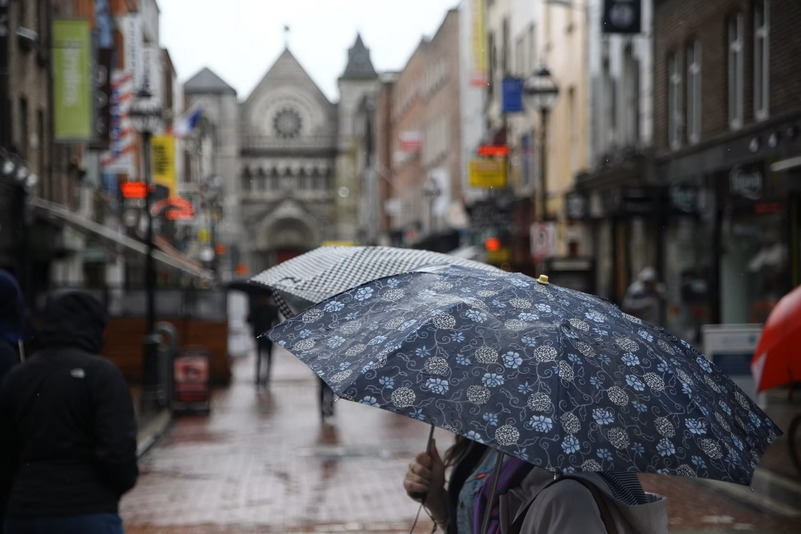

Sally Rooney's So Polite People
Just when "enshittification" has been chosen the word of 2024 by Macquarie's Dictionary, Sally Rooney launches a major novel, 'Intermezzo', 2024, Faber & Faber, 442 pages. It's about that old favourite of the literati, relationships. Ignoring the storm of excrement falling like unnatural rain where the weather isn't busy desertifying the globe, the Irish novelist has written a happy-ending story. A family spat between two competing brothers rages when their father, having served as referee, leaves the game for good.
Rooney, who hasn't shirked speaking up elsewhere against infamies like the Israeli genocide in Palestine, comes across here like her great predecessor James Joyce. He lived up close to World Wars I and II, which set new norms in inhumanity, without writing anything about either. The elder of Rooney's brothers, Peter, even expresses his inner thoughts in Leopold-Bloom style monologue. It's well to remember that no Irish writer after Joyce can escape his influence.

photo by Jaleel Akbash on Unsplash
However, Rooney doesn't otherwise follow Joyce. Her Dublin isn't solidly present like his. It's more a steady rainy mist in which the characters are so plunged in their very own anxieties that they may note street names but rarely stumble against bricks and mortar. Moreover, while Joyce's opening salvo was 'Dubliners', tales of the city's pinched and dyspeptic inhabitants, Rooney has taken as her task to show that the current, leached-out-Catholic Irish are as suave and up-to-date as their middle-class opposite numbers from Finland to Greece. It would be too much to call the half-dozen principal characters "woke", an imprecise catch-all term. But they are unnerving in the decorous way they address one another. Political-correct isn't what they are about. They aren't concerned about the doings of the pòlis. Love is what interests them. This is a "I-love-you-too" novel.
The characters haven't the flaming vulgarity of Blazes Boylan in 'Ulysses' or they of the ilk of Samuel Beckett's self-absorbed Murphy in the novel of that name. They are not Anne Enright's Phil McDaragh in 'The Wren', a "keen carnivore", an international wolf in the clothing of a country bumpkin lamb. Nor are they anything like the child-abusing tyrant dad in Claire Keegan's story, 'The Parting Gift'. (See our 'Three Novels by Sally Rooney'; 'Sally and Molly'; 'How Big is Small, Claire Keegan'; 'Anne Enright Mankiller'.)
Rooney's brothers at odds and the people they are tied to in 'Intermezzo' belong to another race. They are angels of politeness and ultra delicate even in their inner thoughts to which we are amply treated. Is it one of Rooney's ambitions to instil decorum in the Irish middle class characters so they will be worthy to enter into conversation with the the expatriate exquisites of Henry James' novels?
Not that Rooney's brothers, despite their fine manners, are goody-good. The younger, inarticulate Ivan, even says "fuck" when in the throes of sexual pleasure. But he erases that with his continual begging pardon of his mistress. Peter, smashed on pills and vodka, yearns to commit suicide but feels that it would be bad form, a gross manner of behaving to his nearest and dearest. All that softness emboldens the reader to play the gender villain and call this considerable and distinguished novel downright schoolmarmish. Even the detailed scenes of sex, graphic though they may be, are wrapped in dainty lace.
What marks the intertwined characters and their strenuous relating to one another is fear of what others will think of them. Despite the modernity and sophistication Rooney endows them with, they dread gossip not only in the small town where some of the action takes place but in the social circles of Dublin.
The brothers are separated by a decade, and this is a novel about age gaps. Peter is 32 and Ivan 22. Their divergent temperaments also keep them apart. Peter, a barrister and brilliant orator has risen a class notch above his widower father who has been cohabiting with celibate Ivan. This suited the unsociable younger brother. He is something of a champion at chess and earns his living, with no thought of a career, by odd jobs to do with the noble board game. The contrast of the rough and the smooth makes it inevitable that Peter, a man about town, easy with women, well paid, and apparently at the peak of his career looks down on his younger brother. Ivan, seems an exemplary loser, bereft of social skills, short of words and hesitant in approaching the opposite sex. Not that Ivan whom Peter calls "autistic" isn't just as smarmy polite as the others. His elder brother's attitude implants a seed of bitterness in him. When his beloved father and housemate dies, he feels that Peter in his glib superiority hasn't sufficiently appreciated the old man. The novel covers their period of mourning, an intermezzo of bereavement.
Peter's state of mind has worsened thanks to alcohol and drugs. He has had a long relationship with Sylvia, a remarkable woman, of—age again—32. She is a university professor of literature. The couple ceased living together, but they remained close. Then a road accident left Sylvia in a state of permanent pain and physical intimacy was no longer possible. She is understanding and encourages Peter in his affair with the wild young Naomi, a decade his junior.
Sylvia and Peter's conversations are a treasure of the high-flown. Both are performers in what seems like a drawing-room play that they enact for each other and the world at large. Sylvia's illness has in no way blunted her bluestocking acuity. Free of sex, she has perhaps found her true self. But Peter is unhappy no longer able to express his love physically. Luckily, Naomi is available to accommodate his predicament. She, though just as polite as the rest, is the novel's representative of the bold-anything-goes younger generation. Peter admits—how could he not in this novel heavy with the stuff—that he is in love with both women. But far from calming his inner tumult, Peter, a perfectionist, sees this as part of the unpretty mess he has made of his life. His thoughts of suicide continue.
Leitrim, Ireland
And, what is the mousey chess genius, Ivan, up to? In an demonstration of his skill in rural Leitrim, he meets Margaret. She lives apart from her alcoholic husband and is 36. Ivan finds her his heart's desire and their affair builds. Margaret has concerns (polite, of course) over the difference of their ages. What will her mother, her drunken husband, and her friends think of her? Ivan, for his part, is not troubled by the age gap. Heavy feminist irony here because Peter is the same number of years older than Naomi. He makes the mistake of telling Ivan that the affair with Margaret is grotesque. This brings the mutual animosity of the two brothers out into the open, and they exchange blows. At this point Sylvia and Naomi step in, combining wiles, practical and feminine, to mend the feud between the siblings. Brotherly love descends like deus ex machina manna.
After 437 pages of holding each other off, the clan arrange a December 25th dinner with mutual fawning as the main course, a love feast. Published earlier in 2024, this is a book for the Christmas stocking of sophisticates. You can hear Santa's sleigh bells tinkling between the utterances of "sorry, excuse me" and "with respect", the family's special lingo to keep one another at arm's length. Internecine crossfire is reduced to slingshot teasing in front of a suet pud. How different from Anne Enright's narrator in 'The Gathering'. She says of her Irish family:
"…I find that being part of a family is the most excruciating possible way to be alive […] God, I hate my family, these people I never chose to love, but love all the same."
Macquarie's ("Australia's National Dictionary") called enshittification "a very basic Anglo-Saxon term wrapped in affixes which elevate it to being almost formal; almost respectable". Cory Doctorow coined the word in 2022. He was thinking of "platform decay" or "the worsening of a digital platform through reduction in quality of service", which was the definition The American Dialect Society gave in 2023. Doctorow added earlier this year: "We're all living through the enshittocene, a great enshittening, in which the services that matter to us, that we rely on, are turning into giant piles of shit." In 2024, the meaning of the new word has broadened. Macquarie's said, "This word captures what many of us feel is happening to the world and to so many aspects of our lives at the moment."